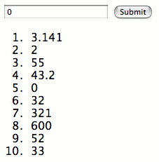

The escape hatch
Programming in Java can be tiresome. The language itself is pedantic, famously knowing better than its users when exception handling code is necessary. But its users are worse, always fretting over their best practices and how to avoid dreaded anti-patterns (as if the word “pattern” applied only to good things). The Java contingent’s corporate mindset, tolerance for unwieldy syntax, and lack of creativity have lead to mockery in the programming world at large. In numbers Java dominates that world, but like Microsoft’s dominance of operating systems, the elite have moved on.
Yet somewhere between the best practices and the anti-patterns of Java scolds, we’ve found there is still some interesting programming to be done. The JVM gives us access to a variety of libraries, some of them useful. A few, like Wicket, are so good they would have changed the whole internet by now, but for the craven conformity of Java masses (and the aloofness of post-Java types who refuse to consider the happenings in our pidgin language).
For this reason we’ve had an idea in the back of our heads for a while now: attempting to implement a Wicket derivative in some better language before someone else does it first. This would require moving from Manhattan to a shack in the hinterlands where we could live off of savings for several years, but sometimes you have to make sacrifices.
Sometimes you don’t have to make sacrifices
Hey everybody! Have you heard of this language called Scala? It’s both functional and object oriented, and it can call into Java libraries. We first heard of this scaly thing a few months ago, from a colleague. We were talking about how Groovy might be the answer to Java’s woes, except that some of the concepts it eschews, like anonymous subclasses, can make it hard to work with Java libraries, like Wicket. The colleague suggested that I look at Scala. My awful internet-y short-attention-span evaluation of the language proceeded as follows:
-
Where the heck is its web site? It’s not even in the top ten for “scala”. Google doesn’t know scala, and neither should I! [Update: a fortnight later, it’s number four.]
-
Okay, here’s the web site. It’s not pretty. If these scala people cared about the web, or about me, or about their supposed “language,” they would have better looking web site.
-
No one’s using this. There must be a good reason for that. It’s not like people aren’t aware of it. One Java smart-y-pants doesn’t seem too impressed.
Thus Scala stayed hidden from this weblog’s gaze, until Marcus showed us “how a Tapestry page looks like in Scala”. It looks easy, that’s how! And if it’s that easy in Wicket’s curmudgeonly predecessor Tapestry, it couldn’t be very hard in Wicket. So we checked out Scala, for reals this time.
An important point about Scala is that it is statically typed. Yes, we’re aware that all the cool languages right now are dynamically typed. But unlike the question of whether or not Java is a verbose, awkward, limited, and generally unfashionable language, the static versus dynamic war is far from over. You can reasonably be on either side of it.
That is, unless you’re integrating with Java libraries. In that case, dynamic typing is a waste of time for both the programmer and the processor. Dynamic languages beg specific optimizations that the JVM does not provide, forcing Groovy and JRuby to run on treadmills. Furthermore, we’re extending class hierarchies from Java libraries and we want the code to mesh easily. Dynamic typing and all the debatable advantages it has are not worth the complications of integration with statically typed code. (This goes both ways, of course.)
Scala interfaces beautifully with Java libraries including, it turns out, Wicket. Therefore it isn’t necessary to rewrite Wicket in a pure object-oriented, functional language because you can already use Wicket perfectly well in one of those. Cynics might assume that Scala is linguistically compromised by the JVM or tainted by its very proximity to The Java. We aren’t qualified to counter that argument (the language programs real nice!11), but those who think they’re qualified to make it should consult Scala’s high-minded documentation section.
Writing a Wicket and Hibernate application in Scala
If we wanted this post to be linked from popular Java sites, this would have been its only section. And that would have been its title, except with “in ten steps” at the end. And a subtitle of “Java is not doomed—Myths EXPOSED.” Anyway!
package example
import net.databinder._
import net.databinder.models._
import net.databinder.components._
import javax.persistence._
import org.hibernate.cfg._
import org.apache.wicket.markup.html._
import org.apache.wicket.markup.html.basic._
import org.apache.wicket.markup.html.form._
import org.apache.wicket.markup.html.list._
class Scale extends DataApplication {
def getHomePage = classOf[Home]
override def configureHibernate(config: AnnotationConfiguration) {
super.configureHibernate(
config.addAnnotatedClass(classOf[Weight])
)
}
}
@Entity
class Weight extends java.io.Serializable {
@Id @GeneratedValue
var id: Int = _
var value: Float = _
}
class Home extends WebPage {
add(new DataForm("form", classOf[Weight]) {
override def onSubmit() {
super.onSubmit()
clearPersistentObject()
}
}.add(new TextField("value")))
add(new PropertyListView("weights", new HibernateListModel("from Weight")) {
def populateItem(item: ListItem) = item.add(new Label("value"))
})
}That is the entire application. In Scala you’re allowed to put whatever classes you want in a source file. You usually wouldn’t want every class in one file, but the freedom is there.
Starting from the top, we have the package declaration and then the familiar buzzkill of import statements, except with a _ instead of a *. No less ugly though. Let’s move on. Scale is the application class. If Wicket were written in Scala it would be a Scala singleton object, but this works fine. See that one line getHomePage method? This is how much fun it would be to write in Java:
@Override
public Class getHomePage() {
return Home.class;
}You could write all that on one line, but people would wring their hands over it in code review. Plus it really would be ugly.
Let’s look at the Weight class. It maps to a database table storing rows of a floating point number and an integer primary key; both are public variables in its class definition. Public variables!?! Yes, but the reference and assign operations are overridable methods so it is okay. There’s an interesting discussion about how it works if you want to read it.
Hibernate Annotations uses field mapping for a thusly defined Scala class, making us wonder what exactly would happen with a _= override, but in practice we’re often wishing Hibernate would bypass whatever weird stuff we sometimes have to do in a set method. There’s enough play in Scala and H.A. that unexpected adjustments should be possible without having to change schema or outside code. We’re just thrilled to be able to dispense with those hideous “getters” and “setters” for the very common base case.
Note that the standard numeric and boolean types in Scala can not be set to null. In our class the values are initialized to _ which maps to 0. To be able to null the value field (for the database and the user interface) we could set it instead to java.lang.Float.
Finally, the Home class is the real meat as far as Wicket is concerned. Wicket likes constructors and, conveniently, in Scala constructing statements go right in the body of the class. In this case we’re using only the default constructor but alternate constructors are supported.

The class adds a Databinder DataForm, which by default wraps its model object in a compound property model and saves or updates it in onSubmit(). By clearing the model after each submit we allow an new one to be added on the next request. The TextField maps to the Float field as it would with bean-style property methods. This doesn’t look much different from how it would in Java.
To list the existing Weight values we can implement populateItem() in one line. Most lists have more than one component per item, but we’ll take our terse syntax when we can get it. There are plenty of anonymous subclass overrides in Wicket programming requiring only one statement; Scala lets us implement them with half the bloat.
This is Home.html, where the fabulous entry and display components are told where to render themselves:
<!DOCTYPE HTML>
<html>
<body>
<form wicket:id="form">
<input type="text" wicket:id="value" />
<input type="submit" />
</form>
<ol>
<li wicket:id="weights"><span wicket:id="value">1.75</span></li>
</ol>
</body>
</html>What this all means
It is easy to learn enough Scala to code with Java libraries. As in this example, the finished product might still be utterly procedural, but it benefits significantly from the abbreviated structures that Scala provides. Translating from Java to Scala is not difficult: rename the file and start fixing compilation errors. (Deleting a ton of semicolons and curly braces is optional.)
Some people have petitioned Sun to bring things like implied types and traits (mix-ins) from Scala to Java. That isn’t likely to happen in the Java quagmire. Significantly improving this or any decade’s corporate programming language in ways that would break existing code is impossible. There is too much money behind the Java status quo. Or, as contented Java programmers like to say, “Java pays my bills.”
But Scala transcends Java. It makes clever use of the JVM to enable modern coding for efficient execution in an environment that is present on almost every computational device. (iPhone, damn you.) Because of Scala, we don’t have to worry about Sun’s corporate gridlock. We can unsubscribe from Neal Gafter’s blog and not even care if he ever gets a closure proposal past Java committees. We can just use Scala instead.
And, as we have time, we can explore the unfamiliar constructs that Scala allows and incorporate them into code that we write, rewrite, and wrap. In Wicket, perhaps we’d like to make it dead simple for a Label to dynamically render with a functional IModel? That would be easy enough to make:
class Fodel(value: () => Object) extends AbstractReadOnlyModel {
override def getObject = value
}And to use:
new Label("status", new Fodel( () => { if (some_comp isEnabled) " :) " else " :( " } ))It is obvious that Databinder will be rewritten in Scala. We’ll be careful to keep essential interfaces simple enough for the Java compiler to understand, but there will be better interfaces for Scala code. Like modern web sites just working on Internet Explorer 6 and shining on less hunchbacked browsers, we hope to be the first of many JVM libraries escaping from Java to a better world.
Anybody got a hammer?
We wish we could say it’s as easy to compile and package Scala code as it is to write it, but Scala’s toolset has reached only the point that motivated people can get work done in it. Now that motivated people are getting work done in it and its popularity is growing, the masses will soon be clamoring for tools that do everything and do it perfectly, and frazzled unpaid toolset programmers will accomodate them in time. Later is the time to start in Scala if you insist on things being easy.
As we saw in the Weight class, Scala handles JDK 1.5 annotations perfectly—but you have to tell it to target 1.5 of course. The Scala Eclipse plug-in has such an option, but it doesn’t seem to work. The good news is that there is a Scala Eclipse plug-in in the first place! It compiles on save and highlights errors. It’s able to replace code in debug mode (there it helps to have classes in separate source files). Breakpoints are supposed to work, and sometimes do.
And there is a Scala Maven plug-in, but—ha ha—it can’t target JDK 1.5 either. We tried to remedy that for an hour or so, and then tried some other Scala Maven plug-in that seemed even more neglected—this was the sign we were waiting for to abandon Maven. Good bye Maven.
Buildr is what we’re using for this and future projects. There’s a lot to be said about Buildr, but for now let’s just say that it gives you a hammer to work with; Maven assigns you a construction contractor. After the contractor let us down we took the hammer and made a Rakefile that is probably horrendous and we won’t dare publish here, but it compiles Scala sources to JDK 1.5 code. Sometime we will nicely ask the Buildr people if they want to support Scala directly, because it is probably not hard for them.
For the brave, the example above is available to download. If you run rake inside it will try to download a bunch of jars to your Maven repository and build itself. If that works you could try rake scale:run to run the demo with Jetty against an in-memory HSQLDB. (A MySQL config is provided in hibernate.properties commented-out lines.)
With a crowbar in addition to that hammer you can edit the Eclipse .project file that Buildr generates to make it a Scala project file, and have Eclipse output its compile to something besides target/classes. Then, set the project to execute rake on every auto-build. That will update the compiled classes, page templates, and property files in target/classes to which you can point your Eclipse Jetty plug-in, if you have one.
Whew! It’s not as bad as it sounds, and the environment is productive once you have it set up. We just made an actual web site in it. Yes, the first Databinder site in Scala is already live! Calling it Scala is kind of funny since Scala is the tip of the iceberg and Java is the rest of the iceberg, but it does establish that this crazy business we just went over actually works, and doesn’t immediately try to serialize the entire class hierarchy (which we feared it would).
Now, please excuse us as we have to go shower off twelve years of boilerplate code.
Codercomments
I just couldn’t resist: link
Ha! We’ll see if that goes anywhere. And yes, this post is very long. It hurts me more than it hurts you.
I can only think about the pain. It’s a good, long read.
I’m curious where the voyage of a scripted JVM will be going.
Now you’ve done it! I’ll be now worrying over all my Wicket code, wondering if there is a tighter way…
Thanks for the nice writeup. I’ll def be taking a look at Scala. And good luck with the Databinder re-write, this should be interesting.
Fortunately, Databinder is teeny tiny or I wouldn’t make such brash plans. It will take me longer to translate things I’ve written on top of it, but since Scala is so insanely compatible I could do Databinder first. Not making any promises tho! Actually, I promise not to make any big changes to Databinder at all until Wicket 1.3 rolls followed by Databinder 1.1.
Nice! Scala has been on my to-check-out list for such a long time now that I can only read this post cursing the fact that I’m spending every free minute I have on Wicket! Seriously, give me a few months to get the book out of the door, and I’ll jump that Scala band wagon!
you have been thoofed (thoof.com)
Nice post, it’s great to see more converts to the Good Cause. Here’s another thing you can do with Scala: write Eclipse plug-ins.
As you noted, the plug-in for Scala needs a little work. Wouldn’t it be cool to fix it up in Scala itself? ;-)
No complaints here! I’m glad to have the plug-in as it is, but I also want fresh converts to know what to expect and how I worked around a few problems I ran into. Thank you for your work on the plug-in—as I understand it is pretty much your baby. I wouldn’t be using Scala without it. Updated: I must have been very confused here. The plug-in is Sean McDirmid’s.
Although I see a few things I don’t like, Scala looks quite interesting. I wonder if it would be too late for me to contribute a few ideas.
BTW, typo above where you said Fodel instead of Model, but I think we all knew what you meant. ;-)
Great article!
I doubt it would be too late at all. There’s plenty of recent and current activity in the language change log.
Oh and that spelling is a contraction of “functional model”—working without name completion is making me a little coo coo for short names.
Thank’s for a brilliant article! I will surely have a look into Scala, from my 20 minutes spent so far I get that “this-can-get-big” feeling.
This is just not fair! I wanted to do this ever since I came across wicket :-)
Please keep us updated on how things work out with the scala-wicket integration.
One thing I can’t stop thinking about is how the scala code could be validated with scalacheck to generate the component tree prescribed in the HTML template.
!!! excellent article !!!
Some notes replace import net.databinder.components._ with import net.databinder.components.hibernate._
and the rake file needs to download other databinder stuff. HOUSE=“net.databinder:databinder:jar:1.1-SNAPSHOT”,”net.databinder:databinder-models:jar:1.1-SNAPSHOT”,”net.databinder:databinder-components:jar:1.1-SNAPSHOT”
What, people are actually playing around with that thing? I recently broke Databinder into sub-projects and forgot to update this ex. Sorry for that! But now it’s even better than before, with a much shorter Rakefile and all the weirdness factored into an second file that will be useful across projects. Download again if you want to see that, tho it sounds like you’ve done fine on your own.
turned out my ubuntu 6.0.6 default install of ruby was not well.
:( after much suffering i reinstalled ruby from source
im getting hibernate errors now, but will download the latest code when i get home and try that out.
The Ruby in Feisty is solid, and it has updated versions of Java packaged. Might be worth upgrading. And if you want help with Databinder, please join the forum and drop me an e-mail with your login name so I can approve the account.
Hmm. My brain is foggy, so I’ll have to take a look later. I will say Groovy did irk me with the lack of anonymous subclasses and whatnot while working on the Groovy builder for Wicket (yes, I feel like a deadbeat dad with the current state of that project).
I do sort of lament the lack of clear development efforts between different projects. It seems like there are many efforts on the Java front for the definitive “application language’ sibling. JRuby, Jython, Groovy, and, apparently, Scala (or the others). I’m still in the Groovy camp, notably for the syntax similarity, optional typing, relative maturity, and industry adoption. A big one as well is editor support. Once they get the “auto import” working for Eclipse and Idea, I’m sold. Wicket is problematic, but if I ever get off my behind and finish that builder, it would be a little bit better.
Currently I’ve been working with Seam exclusively at the day job. They’ve put Groovy support right into the thing.
Anyway, interesting post. I’ll check it out.
I agree that it’s now about the toolset. In order to get all those Java folks out there (I’m on of them that disparately wants to move on), we need tools. I’m not sure I want to go back to vi.
I think Neal Gafter has had a chance to look more closely at Scala
http://gafter.blogspot.com/2008/01/is-java-dying.html
Add a comment